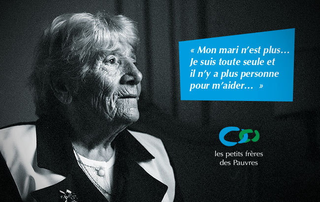

Accueil
Accueil

En 1939, après un long cheminement intellectuel et spirituel, Armand Marquiset décida de consacrer sa vie aux plus pauvres. Ce projet se concrétisa en 1946 avec la création de l'association Les petits frères des Pauvres. Il s'attacha particulièrement à aider les personnes âgées démunies. Aimer les plus pauvres comme des frères et les aider autant que nécessaire : tels ont été les moteurs d'Armand Marquiset.
L'action des petits frères des Pauvres s'accomplit, aujourd'hui encore, autour de ces valeurs fondamentales de respect et de fraternité. Bénévoles et salariés offrent un accompagnement dans la durée pour permettre aux personnes de se reconstruire, de tisser des réseaux relationnels et de sortir de leur isolement, tout en leur apportant l'aide matérielle dont elles ont besoin.
Fidèles aux intuitions de leur fondateur, les petits frères des Pauvres ont le souci d'adapter leur action aux besoins de la société, d'aller vers les nouvelles pauvretés : les personnes âgées que des accidents de la vie ont conduites à la rue, les grands malades en fin de vie, les personnes isolées dans les banlieues difficiles ou dans les foyers de migrants âgés…
| 1930/1939 | Armand MARQUISET fait ses premiers pas dans l'accompagnement social à « La Mie de pain ». |
|---|---|
| 7 juillet 1939 | il a la révélation des petits frères des Pauvres à Notre Dame de Paris. Le concept de l'association voit le jour mais les événements liés à la seconde guerre mondiale en reportent la création. |
| 19 avril 1946 | Création officielle de l'association des petits frères des Pauvres. Organisation des premières actions à Paris en faveur des « vieux pauvres » du Quartier Saint-Ambroise (Paris 11ème). |
| 1949 | Création du tout premier « Château du Bonheur », maison natale d'Armand Marquiset réaménagée afin d'accueillir ses protégés le temps des vacances. |
| 1951 | Premier réveillon de Noël organisé par les petits frères des Pauvres avec la paroisse Saint-Ambroise. Une initiative qui essaimera par la suite dans plusieurs grandes villes de province puis dans de nombreux pays à travers le monde. |
| 1965 | Départ d'Armand Marquiset. L'association prend une orientation plus laïque et plus en phase directe avec les évolutions rapides de la société. |
| 1970 | Les petits frères des Pauvres adoptent un ton plus revendicatif en dénonçant par exemple les mauvaises conditions de vie des personnes âgées dans les hospices. |
| 1977 | Création de Bersabée, première fondation pour le logement ; elle est devenue -en 2003- la Fondation des petits frères des Pauvres. |
| 1981 | L'Association les petits frères des Pauvres est reconnue d'utilité publique. |
| 1984 | Création de « Ecoute Amitié » - devenu en 2007 «Solitud'Ecoute» (n° vert 0 800 47 47 88) - service d'écoute et d'accompagnement par téléphone animé par des bénévoles. |
| 1991 | Les petits frères des Pauvres étendent leur champ d'intervention au secteur hospitalier et au domicile des personnes malades. |
| 1996 | A l'occasion du 50ème anniversaire de l'Association, les petits frères des Pauvres obtiennent le label Grande cause nationale |
| 1998 | la Charte des petits frères des Pauvres |
| 2001 | Création de l'Association de gestion des établissements des petits frères des Pauvres qui gère la plupart des établissements (28 à ce jour). |
| 2008 | La Fondation des petits frères des Pauvres prend en charge son 500ème logement |
| 2016 | les petits frères des Pauvres fêtent leurs 70 ans |